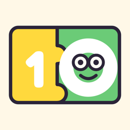

Privacy policy
Amici del 10 · ultimo aggiornamento: 24 ottobre 2026
In breve: Amici del 10 è pensato per i bambini e non raccoglie dati personali. Non ci sono account, pubblicità, strumenti di analisi o tracciamento, né servizi di terze parti.
Titolare
Davide Bettio — davide.bettio@gmail.com
Dati salvati sul dispositivo
Per far funzionare il gioco, l'app salva solo sul dispositivo:
- il nome, l'avatar e il colore scelti nel profilo (il nome può essere di fantasia);
- i punteggi migliori e le statistiche di gioco;
- le impostazioni (suoni, musica, vibrazione, difficoltà, lingua).
Questi dati non vengono mai inviati a noi né a terzi. Eliminando l'app vengono cancellati.
Game Center
Se sul dispositivo è attivo Game Center di Apple, al termine di una partita il punteggio viene inviato alla classifica di Game Center. Il servizio è gestito da Apple secondo la propria informativa sulla privacy; noi non riceviamo dati personali del giocatore. Per gli account dei bambini, i genitori possono disattivare Game Center da Tempo di utilizzo. Il gioco funziona anche senza.
Bambini
Non raccogliamo consapevolmente alcuna informazione personale da bambini o da altri utenti. L'app non contiene pubblicità, acquisti in-app né link verso siti esterni.
I tuoi diritti
Poiché non trattiamo dati personali, non abbiamo dati da consultare, correggere o cancellare. Per qualsiasi domanda scrivi all'indirizzo sopra.
Modifiche
Eventuali modifiche a questa informativa saranno pubblicate su questa pagina, con la data di aggiornamento.